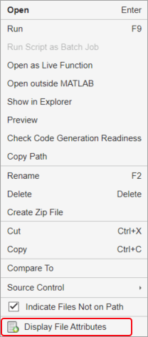
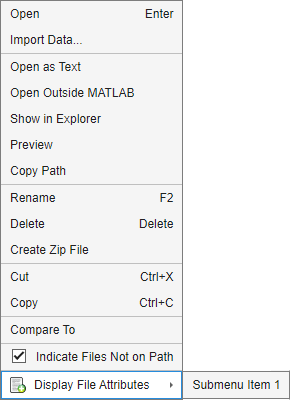

Add Items to Files Panel Context Menu
You can add your own custom items to the Files panel context menu using the mw.desktop.fileBrowsers.contextMenu extension point.
Add Simple Item to Context Menu
Start by creating a JSON file named extensions.json in a folder named
resources. For each custom item that you want to add to the Files panel
context menu, define an object within the items array of the
mw.desktop.fileBrowsers.contextMenu extension point. When adding
multiple custom items, separate each object with a comma.
For example, this extensions.json file contains a set of JSON
declarations that adds an item to the Files panel context menu in a custom section at the
bottom of the menu. In this example, the custom item appears only if one or more files or
folders in the Files panel are selected.
{
"mw.desktop.fileBrowsers.contextMenu": {
"sections": [
{
"name": "myToolbox.myCustomSection",
"type": "SimpleMenuSection",
"items": [
{
"name": "myToolbox.displayAttributes",
"type": "SimpleMenuItem",
"when": "!selection.isEmpty",
"action": {
"name": "myToolbox.displayAttributesAction",
"type": "Action",
"text": "Display File Attributes",
"icon": "icons/Display_16.png",
"callback": "displayFileAttributes"
}
}
]
}
]
}
}Create User-Defined MATLAB Function
To perform an action when the custom item in the Files panel context menu is selected,
create a function that performs the intended action. Then specify the function name as the
value of the callback property. Place the function in a folder on the
MATLAB® path to make it available.
The MATLAB function that you create must:
Accept a callback information object as the input argument. The callback information object contains the paths to each file selected in the Files panel when the menu item is selected.
Return no output arguments.
For example, create a function that displays the file attributes for each selected file in the Files panel.
function displayFileAttributes(callbackInfo) numfiles = length(callbackInfo.Context.selectedFilePaths); for i = 1:numfiles disp("File attributes for '" + callbackInfo.Context.selectedFilePaths(i) + "'") fileattrib(callbackInfo.Context.selectedFilePaths(i)) end end
Enable Your Customizations
To enable your customizations, add the folder containing the
resources folder with the extensions.json file to
the path. Once the folder is on the path, a new menu item appears in the Files panel
context menu. To see the custom menu item, select a file in the Files panel and
right-click it.

When you select the new menu item, MATLAB displays the file attributes for the selected files in the Files panel within the Command Window.
File attributes for 'C:\MyWork\stat.m'
Name: 'C:\MyWork\stat.m'
archive: 1
system: 0
hidden: 0
directory: 0
UserRead: 1
UserWrite: 1
UserExecute: 1
GroupRead: NaN
GroupWrite: NaN
GroupExecute: NaN
OtherRead: NaN
OtherWrite: NaN
OtherExecute: NaNAdd Menu Item with Submenu
You also can add submenus to your custom context menu items. For example, this
extensions.json file contains a set of JSON declarations that adds an
item to the Files panel context menu with a submenu that includes an additional item.
{
"mw.desktop.fileBrowsers.contextMenu": {
"sections": [
{
"name": "myToolbox.myCustomSection",
"type": "SimpleMenuSection",
"items": [
{
"name": "myToolbox.displayAttributes",
"type": "SimpleMenuItem",
"when": "!selection.isEmpty",
"action": {
"name": "myToolbox.displayAttributesAction",
"type": "Action",
"text": "Display File Attributes",
"icon": "icons/Display_16.png"
},
"popup": {
"name": "myToolbox.myToolboxPopupMenu",
"type": "SimpleMenu",
"sections": [
{
"name": "myToolbox.mySubmenuSection",
"type": "SimpleMenuSection",
"items": [
{
"name": "myToolbox.mySubmenuItem1",
"type": "MenuItem",
"action": {
"type": "Action",
"name": "myToolbox.mySubmenuItem1Action",
"text": "Submenu Item 1",
"callback": "displayFileAttributes"
}
}
]
}
]
}
}
]
}
]
}
}When you enable your customizations, a new menu item appears in the Files panel context menu with a submenu.

See Also
mw.desktop.fileBrowsers.contextMenu